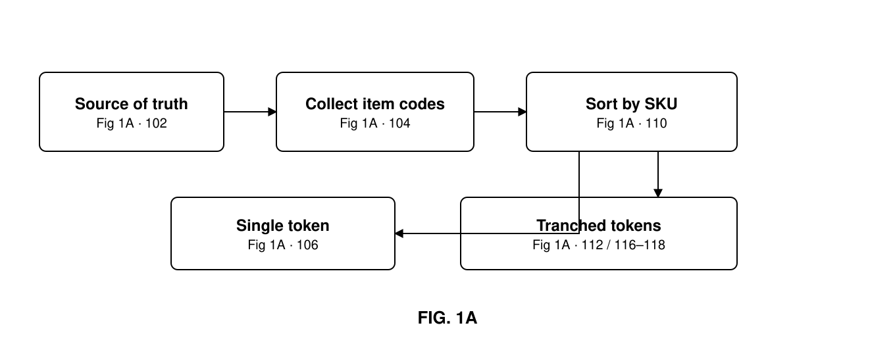
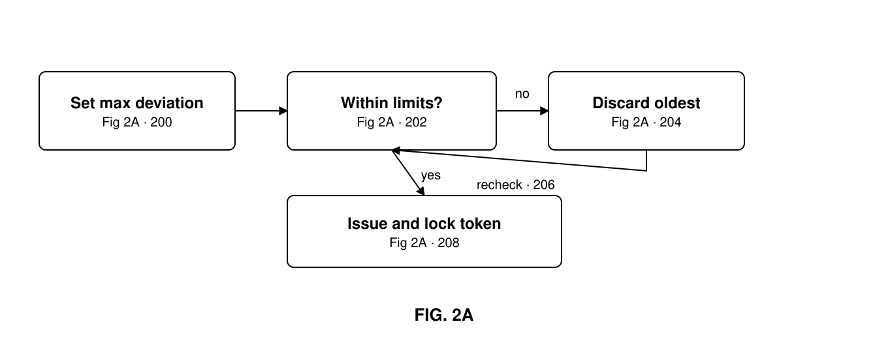
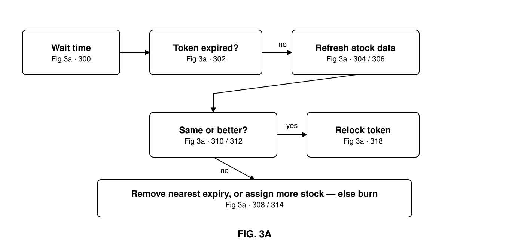

This invention allows the electronic representation of real-world inventory assets on a rolling basis, taking into account inflows and outflows through sales and resupply — without requiring each individual item to have its own non-fungible token. Instead, like-for-like items are grouped together, while ensuring that the count, and/or the consideration, and/or the age profile of the underlying assets remains the same as or greater than at original issuance. This reduces the cost of issuing electronic representations of inventory, and protects the integrity of the token by preventing degradation of value through the exchange of longer-expiration items for shorter-expiration ones.
A non-fungible token (NFT) is an electronic representation of a real-world asset (RWA) or assets, used to describe that asset in an agreed manner and then locked using cryptography. Accurate electronic representation of an underlying tangible asset is useful across many fields, and has played a significant role in allowing the finance and sale of assets in electronic format, both in traditional markets and within distributed ledger and blockchain communities.
For high-value inventory items, issuing an NFT for each item owned may be cost-effective. But for lower-cost or consumable items facing large amounts of turnover, the cost of issuing an NFT per item becomes prohibitive — and issuing a traditional NFT for a fixed group of items means it must be burnt every time an item ceases to be a valid member of the group, whether sold or damaged in transit. The need arises for an adapted NFT that still provides surety about the underlying items described, yet allows controlled flexibility for the purposes of stock turnover.
A traditional NFT describes a single item or group of items so that they can be identified accurately amongst other similar items, and allows the current owner to assign various rights electronically to all or part of that item. A Same-or-Better NFT ("SorB NFT") allows the application of a single NFT to a flexible but verified set of inventory.
A SorB NFT describes single or multiple asset lines, or stock keeping units (SKUs), by agreed physical attributes such as — but not limited to — a SKU-level identifying code describing the manufacturer, the product, or both. The SorB NFT also prescribes a verified source that it trusts to provide current data about the levels and values of the SKUs it includes. This allows the issuer to cycle through inventory without continuously destroying and reissuing tokens. Creating and destroying an NFT incurs the cost of recording its state on a blockchain or distributed ledger, making a SorB NFT desirable across all inventory items, because turnover is inevitable.
A SorB NFT requires the issuer, or an independent third party, to verify that the inventory levels described remain available. If inventory is sold, it can be replaced by the "same" item or a "better" item in accordance with the description contained in the token. In practice this allows an issuer to keep a reservoir of inventory, sell their product, and replenish it before the amount held drops below that described within the SorB NFT. Replacement items must be the same as those they replace, or better — where "better" conforms to the requirements stipulated in the original description, cryptographically locked into the token on issuance.
Consider a SorB NFT that cycles through product with an expiration date. One of the describing attributes is the sum of each expiration date for each unique product line described. The verifying system allows the sale of units of that inventory line until the described value is met; at this point the token moves into arrears if more items are sold, unless the inventory is replenished. Upon replacement, the expiration date of each item is checked by the verifier to ensure:
This calculation prevents borrowers from creating a token representing products with distant expiration dates — and hence plenty of time to sell — and then cycling the original contents out and replacing them with less valuable, near-to-expiry product, reducing the effective value of the token.
Another implementation uses the current price of an item, allowing replenishment of linked stock to counter price discounting. During cycling, the token can be programmed to require the current price, or an update to the average rolling historic price over a specified period, for each SKU. If price reductions or increases have varied the value of the underlying inventory, the contract can calculate how many extra or fewer items must be added in order to match the initial issuing value. All such calculations can be completed within the smart contract itself, autonomously, or prepared by a source trusted by all parties and presented to the token.
An issuer may choose to create single-SKU or compounded SorB NFTs. For compounded tokens the multiple SKUs are all described, and then a minimum number or value required, and expiration value per SKU, defined. An issuer may also stack multiple tokens. Where a stack involves an "or better" calculation rule, the verifier places the least valuable — in our example, shortest expiration — in the first token, then issues further tokens so the inventory holding is divided into tranches. Inventory is cycled out by the verifying party by removing the least valuable first (first in, first out). Similarly, as multiple counterparties may participate in partial ownership of each token, the first to commit funds receives returns from the most valuable token (first in, last out).



Data about the real-world assets to be represented by a cryptographically lockable electronic file is ascertained from a source-of-truth database or databases (102) by requesting and receiving a list of the unique identifying product codes and/or product identifiers for each item, and any other information considered useful for accurate identification of the asset (104). The entire data set can be locked in a single SorB NFT (106), or sorted by category — make, model, manufacturer (110) — to identify similar units, herein referred to as stock keeping units: units that can be considered interchangeable, like for like, but which may have different production dates and come from different batches. This allows the data to be analyzed and a decision made on whether one token will be issued per SKU, or multiple tokens are required to subdivide the SKU into tranches (112).
Tranches are useful for several reasons — for example, large inventory holdings where treasury departments may wish to borrow against their token and want to present an instrument of a certain total consideration or product count as the underlying asset. Where multiple tokens are required, each separate stock keeping unit must be ordered to allow ranking from shortest to longest expiration date (116–118), summed to give a total days-to-expiration value, and the mean and standard deviation calculated. With this base data captured, it can be decided whether a single token will be issued for each SKU (Fig. 1B, 110). Each issued token then takes a hierarchical order within its SKU, where the most valuable represents the items furthest from expiration and the least valuable those closest to it (Fig. 1B, 112).
Each token can now be constructed. First the maximum acceptable absolute deviation from the mean is set and compared to the initial mean absolute deviation of the data set provided, ensuring the described disbursement of the data set's expiration dates is within acceptable limits (200, 202). If it is not, the oldest expiration date must be discarded (204) and the process repeated until within range (206) — this removal of aged stock reduces the overall deviation. When all criteria are met the token can be issued, recording each metadata item (208), which may include price, total consideration value, number of items, current absolute deviation from the mean, maximum absolute deviation from the mean, average expiration, total expiration value, a wait time for how long to pause before recalculation, and an end-date expiration for the token itself. The token is now cryptographically locked, ready for disbursement to a distributed ledger, blockchain or trusted centralized system.
After the specified wait time has passed (300), the end-date expiration of the token is checked. If it has not passed (302), the process of calculating changes to the underlying stock data — for each token separately and collectively — can proceed. Updated data must be retrieved from the source or sources of truth (304), and the stock allocated so that the absolute deviation from the mean and total days to expiration can be recalculated (306).
If the new total days to expiration is greater than the previous cycle's after sold inventory has been replaced; the absolute deviation from the mean has not deteriorated (310); and the final count of inventory and/or total consideration represented is the same or greater than the previous cycle (312) — or, if valued by average sales price, the consideration of all like-for-like items is the same or increased based on historic sales data — then the token can be maintained for another cycle and its underlying data set locked by a new cryptographic hash (318).
If the total days to expiration or the absolute mean has deteriorated, the item closest to expiration must be removed until within limits (308). If the count of inventory has then fallen below the minimum threshold, additional inventory must be assigned into the data set (314). If no more inventory is available for allocation, the token is no longer valid and must be burnt to prevent its use as a representation of its underlying data set. The inventory released can then be used to fill the required data sets of other tokens, or to create a new, lower-value token.
Where multiple tokens are issued within a SKU, the ordered hierarchy by expiration is used to fill each one, and each token within a SKU must carry the same preset maximum variation from the mean for its standard deviation away from the average expiration age of the grouped items. Tokens can then be ordered from longest to shortest average expiration, allowing the system to cycle stock out of each token in an orderly first-in-first-out manner. This ensures that when stock is replaced the system can calculate the new total expiration value and standard deviation from the mean, and confirm the shared rules within the token have been met — that the inventory represented is like for like, that expiration dates have improved or been maintained to the satisfaction of the token's rule set, and that each token has therefore gained or maintained intrinsic value through the cycling of its underlying real-world asset, achieved fairly and in an order understood by all participants.
What is claimed for: